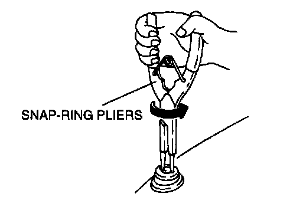
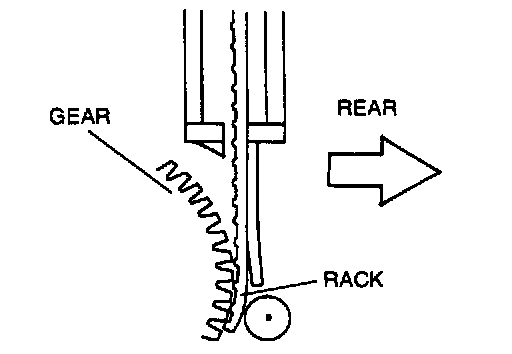

With Power Antenna
ANTENNA MAST REMOVALCAUTION: Always remove the antenna mast with the power antenna installed in the vehicle. Removing the antenna mast from the removed power antenna may damage the power antenna or the antenna mast.

1. Use a snap-ring pliers to remove the mounting nut.
2. Turn the ignition switch to ON or ACC.
3. Audio power switch is ON.
4. To turn on the radio, press AM/FM button.
5. Pull out the antenna mast after it fully extends.
ANTENNA MAST INSTALLATION

1. Turn the ignition switch to ON or ACC.
2. Straighten the warp of rack end.
3. Audio power switch is ON.
4. To turn on the radio, press AM/FM button.
5. To turn off the radio, audio power switch is off, then immediately insert the rack into the power antenna.
6. After the antenna mast is fully retracted, tighten the mounting nut to the specification.
Tightening torque
1.5 - 2.9 Nm (15 - 30 kg.cm, 14 - 26 in.lb)
7. Verify that the power antenna operates smoothly when the audio unit radio on.